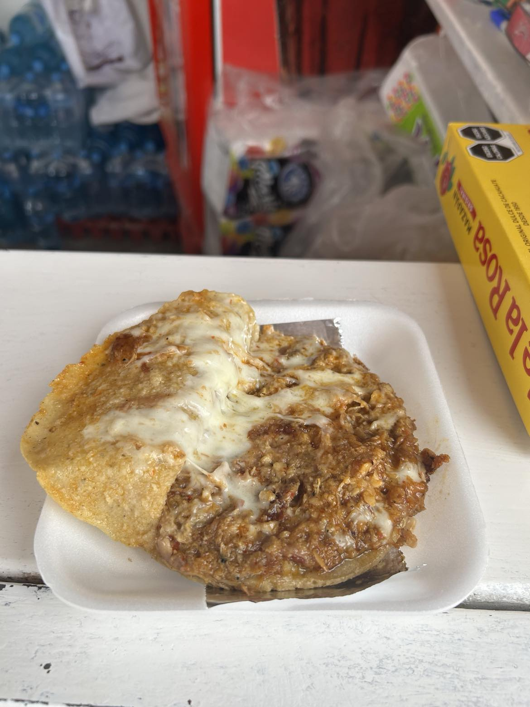

Gorditas Picadas

Gorditas Picadas from beside UAZ in Jalpa
Ingredients
- Mazeca
- Water
- Pork Fat
- Frying Oil
- Refried Beans
- Queso Fresco
- Pulled Pork
Recipe
- Prepare the Mazeca by combining with warm water
- Form balls with the dough and flatten by hand
- Cook on frying pan 2-3 minutes per side
- Fry in oil for 2 minutes each side
- Cut open gorditas half way
- Fill with your choice of beans, queso, and carne!
- Take a deep breath and ground yourself before your life changes